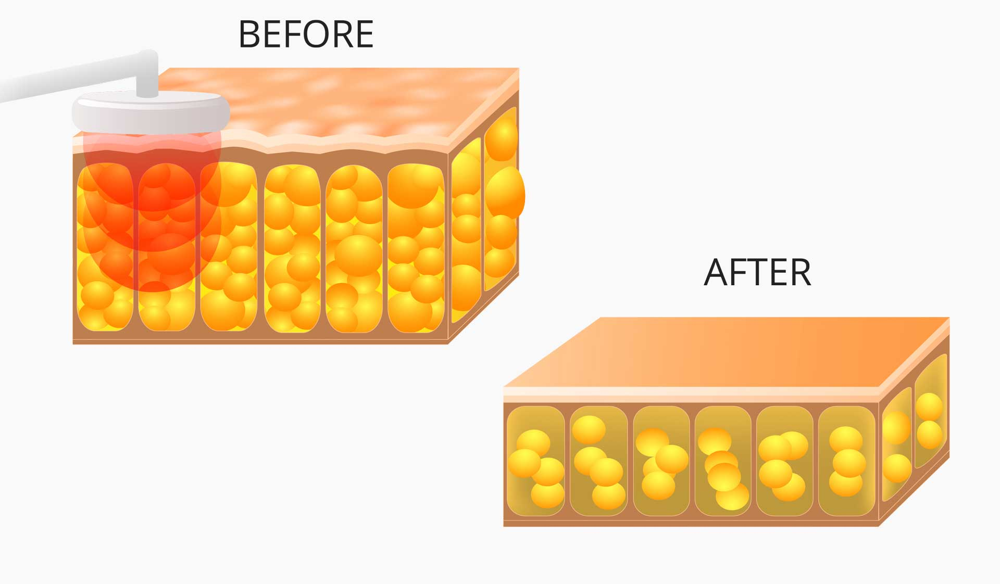
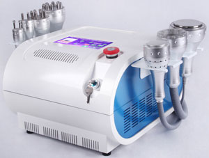

Are you looking for a weight loss franchise?
Our business opportunity has all of the positives of a franchise with none of the negatives. Find out more below!
Want to jump to a particular section? Introduction, Potential Earnings, Machines or Cost & Package.
We have many years experience in the set-up of successful business model across the UK & Ireland; and you can rest assured that if you choose us, we will have your new business up and running with no fuss, making you money from day one!
"No experience necessary, full training given"
There are literally millions of people trying to lose weight every day! It is one of the most popular problems the majority of us, men or women, suffer from. Whilst modern living and technology is making our lives easier, trying to lose the fat can bring on depression and lower your self confidence.
"A real problem that NOW has a solution"
What is Cavitation Liposuction?
Cavitation lipo is a non-surgical liposuction treatment. The treatment requires no anaesthetic, leaves no scars, has no discomfort, and no disruption to your daily activities or routine; it presents a risk-free alternative to expensive liposuction.
"The result is loss of fat"
Most of us have some stubborn fat deposits that never seem to disappear no matter what your diet or how hard you work out.
Cavitation is a natural phenomenon based on low frequency ultrasound. The energy in the form of heat (minor effect) and pressure wave (major effect) is released. The result is loss of fat. The dissolved fat cells are simply expelled from your body through your urine, which allows you to continue with your normal day-to-day activities, additional exercise is required alongside the treatment in the form of a brisk walk or change in lifestyle (such as taking the stairs instead of the lift). If the client does not want to, or can't exercise for any reason we have superb vibration plates which do the same thing as exercise to help disperse the fat out of their system.

Our cavitation treatment does not require any special pre-treatment. It starts with circumference measurement of the target body area, continues with circular movements of the applicator over the treatment site, and is finalized with another circumference measurement. The duration of a treatment sessioncan vary from 15 to 30 minutes depending on the size of the area and the thickness of the fat layer.
We offer full training and no experience is required to operate our Inch Loss Clinic system.
You will simply need to complete our theory test to show you have the basic understanding of operation which then allows our specialist insurance to cover you to practice and operate our Inch Loss Clinic system.
The business
Ultrasound Cavitation is a technique that reduces body fat and allows cellulite to be removed selectively, safely and non-invasively. The machine uses low frequency ultrasound which is conducted through the skin to break up the fatty tissue into a liquid substance. This liquid is then passed out of the body naturally through your urine. Our Inch Loss Clinic system also has wrinkle elimination technology, tightening and lifting to improve your skin after the weight loss.
On average most people will only need 8 sessions in the desired area, although most people will want more treatments to remain at their desired weight, which means plenty of repeat business. Inch Loss Clinic recommends 2 sessions per week, over a 4 week period. So at £50 (recommended) per half hour session, 8 hours will generate you £400 from each customer. This is amazingly cost effective when you compare it to traditional liposuction, which costs thousands, is painful and involves surgery. This makes it much more affordable to people than traditional liposuction.
- Earn £100.00 per hour – 2 x 30 minutes sessions @ £50 each
- Spare time, part time or full time
- Hours to suit
- Amazing, new and innovative product
- Massive market place
- Repeat business – Men & Women
We have the latest in liposuction technology and you could be a part of this amazing revolutionary technology and ever growing industry! This will give you a secure future, as people are always having concerns with their weight and cellulite. Women and men are always looking for a quick fix, so repeat business is assured, giving you a stress free life style that's flexible around your day to day routine.
Reasons your customers will use these machines!
- People look to lose weight before they go on their holidays
- Brides may need to fit into their dress before the big day!
Repeat business is guaranteed as most people tend not to stick to their diets, as they know they can call you to nip round for a session and remove any fat they put back on! Also, what tends to happen is the customer will see the results from one area and then want other areas doing. This causes a snowball effect which is fantastic for repeat business!
- Fact! Over 90% of women, all shapes, sizes and ages, suffer from cellulite. Cellulite is the name given to lumpy, irregular fatty deposits
- Cellulite begins to form during puberty, but it's not always noticeable on younger women because their skin is more supple
- Cellulite also affects men as well
- Our Liposuction Cavitation is a great procedure for those "hard to target" areas like the stomach, thighs, hips, arms, buttocks and even love handles!
We recommend £50 per half hour session, as the customer is paying for your time/travel and for the use of this professional and expensive product, which equates to £100 per hour as a technician. This works out at £400 for 8 sessions, which is the average number of treatments required by most people. Of course, the more fat that has to be removed, the more treatments they will need.
So, it's quite simple to work out how much you can earn. Just 10 customers per week will generate you £1000.00 per week, £52,000.00 per year! Imagine 10 local businesses sending you just 1 customer per week and that's £1,000.00 per week before you've even started. We provide a minimum of 10 salons/businesses using our referral system.
"That's only 10 hours per week to earn £1,000.00 per week"
Remember, this is your business, so you can charge more for your services if you wish, you're the boss! We are simply advising you to keep the price low so you can gain plenty of customers, as there is plenty of profit at these prices.
Potential earnings (Recap)
Remember, that's just working a few hours operated only by you. Purchase more machines, expand and you can easily work out how much serious money this business can make you! These are figures based on easily achieved results operating part time, from home.
You have little overheads and your main outgoing is fuel which is covered by any commission paid out to any salons are from business already obtained (more about commissions below).
What we offer
We offer a fully set-up business package, including training, equipment and on-going help and support. We even help you obtain customers from day one using our fantastic referral system! There are no on-going fees to pay whatsoever! Backup and support is FREE for as long as you need it, as with all our products.
Imagine having regular customers with repeat business, there's also word of mouth as you become more established, and remember we are going to help spread the word by registering you with local salons and venues that will supply you with on-going customers.
We will also set up your website which our IT department will SEO (Search Engine Optimisation) to help give you high local positioning on the biggest search engines, like Google to help generate even more customers!

"We offer back-up, support and a professional set-up"
You do not have to lift a finger, allow us to arrange and set-up everything for you, including helping you to get customers with our unique marketing campaign in your local area. It's tried and tested to help spread the word about your new business and we provide you customers from it.
Our referral system:
We will market your local chosen area and register you with local salons and other establishments that will generate interest for your services. We offer them commission for introducing their customers to you. This is a great incentive for them to promote your business for you on a continuous basis. You only pay them commission on completed work, so this is FREE advertising and we'll set it all up for you as part of the package!
Also, salon days are very popular, where we can arrange a day(s) where you go into their premises and the customers come to you and you pay a day rate to the salon for the use of their premises. This is an excellent service and saves you travelling.
Machines
We now have two machines for you to choose from. Please find details below;
Machine 1 (Standard Inch Loss Unit)
AN EFFECTIVE CATIVATION UNIT, DESIGNED FOR MOBILE USE
The following are supplied with the unit:
- Gel (500ml)
- Anti-cellulite serum (50ml)
- Firming serum (50ml)
- DVD with step by step usage guide
Product Specification
- Weight: 7kg
- Dimensions: L X W X H: 34 x 38 x 13 cm
- Ultrasound: 40 kHz
Hand Unit A:
- Output power: 5 to 25 Watts (depending on the program)
- P1-P4: 4 levels of pulse emission
- P5: continuous pulse emission
The larger handset is for general, all-over body treatment. It has 4 pulsed mode programs and 1 continuous mode program, with 5 different intensity levels.
- Time: Programmable from 1 to 15 minutes.
- Intensity: 5 intensity levels (5-10-15-20-25)
- Mode: 4 programmable pulsed work modes (P1-P2-P3-P4)
- 1 continuous work mode (P5)
Hand Unit B:
- Output power: 1 to 4 Watts, depending on the program
- P1-P10: 10 levels of pulse emission
- Power supply: Voltage: 220V, Frequency: 50 Hz
The smaller handset is specially designed to treat the more troublesome areas of fat, because the treatment area is smaller the power is more concentrated and its effect is greater. It has 10 pulsed mode programs and 4 different intensity levels. There is also an option to light an LED ring for greater control over the area being treated.
- Time: Programmable from 1 to 15 minutes.
- Intensity: 4 intensity levels (1-2-3-4)
- Mode: 10 programmable pulsed work modes (P1-P2-P3-P4-P5-P6-P7-P8-P9-P10)
With this unit you only have to worry about programming in three simple functions: intensity, time and work mode.
Machine 2 (Multi-Unit)
A COMPLETE NON-SURGICAL SOLUTION FOR BODY AND FACE, DESIGN FOR SALON USE

Function:
- Dissolve fat
- Lymphatic drainage
- Firm skin
- Enhance skin elasticity
- Promote tissue metabolism
- Repel the cellulite
- Tighten the facial skin
- Strengthen the facial skin elasticity
- Fat dissolving
- Body sculpturing
- Lift, tone and brighten the face
- Tighten the skin on the underarms and legs
- Skin lifting
- Skin rejuvenation
- Wrinkles and fine lines removing
- Skin muscles firming
- Minimize Pores
- Balance skin tone
- Inhibit the formation of melanin pigment
- Accelerate blood circulation
- Fat burning
- Weigh loss
- Power: 130W
- Voltage: 110V/220V, 60Hz/ 50Hz
- Size:55x47x50 cm
- Weight: 14.5 kg
- Treatment Area: Body, Face
Package Including:
- Main unit x 1
- Vacuum Bipolar RF Probe X 1
- 40K Cavitation Probe X 1
- Cooling Probe X 1
- Bipolar RF Probe X 1
- Tripolar RF Probe X 1
- Eight Polar RF Probe X 1
- Ten Polar RF Probe X 1
- Power Cord x 1
- Full detailed English manual/instructions X 1
COLD 5°C / 41°F
It detoxifies and shrinks pores; soothes and refreshes puffy eyes, swollen face, and large skin pores. The cold therapy approaches facial rejuvenation and shortens time and truly making a “quicker lift.”
- 1. Relieve tired eyes
- 2. Relieves tension headache
- 3. Relieves facial fatigue.
- 4. Reduces muscle tension and spasm around the eyes, face and jaw.
Why you should invest
- Full set-up, certified training & on-going support
- We market your local area for customers
- Superb, unique, new and innovative product
- Secure future – repeat business
- Low investment for maximum rewards
- No on-going fees or royalties to pay
- FREE - Affiliate Program to earn on-going commission
Full Package
Only £5,995+VAT
Package includes the following:
- Fully certified training which is recognised by the Health Care Professions Council
- Inch Loss Clinic's unique MOBILE Cavitation system
- Full 12 months operators' liability insurance
- One-page template website with 12 months hosting and .co.uk domain name (2 year registration) included
- Customers passed to you from our national promotions website site
- Training folders and business model with help and support with your own designs (FREE graphic design work for any project)
- Professional printing package of 1,000 prints; includes cards, vouchers & leaflets
- Sample forms for you to use
- Full marketing campaign in your chosen area using our fantastic referral system. It helps market your business and gain customers from day one! This is a tried and tested concept that works and gives your business the best start possible!
- A fully programmable digital answering system; it's like having your own secretary when you're not there. It takes messages, forwards them or even emails you your missed calls and messages. You'll always look and sound professional with this system
- Full back-up and support for as long as you need it
- No ongoing costs - No royalties!
New "Slim" Package
Only £3,999+VAT
We have just launched a brand new “Slim” version of our Inch Loss Clinic package which is even more affordable than the already affordable full package!
The “Slim” package includes the following:
- Inch Loss Clinics unique MOBILE commercial Cavitation system
- Full training provided, the course is recognised by the Health Care Professions Council
- Full 12 months operators' liability insurance
- A fully programmable digital answering system; it's like having your own secretary when you're not there. It takes messages, forwards them or even emails you your missed calls and messages. You'll always look and sound professional with this system
- Customers passed to you from our national promotions website site
- Training folders and business model with help and support with your own designs (FREE graphic design work for any project)
- Sample forms
- 200 vouchers
- Back-up and support
- NO OTHER COSTS AFTER SETUP (for example NO ROYALTIES)
- DOES NOT INCLUDE a full printing package (business cards and leaflets)
- DOES NOT INCLUDE a full marketing campaign in your chosen area
- DOES NOT INCLUDE a website with email and hosting
Training
Training is held in at our head office and covers the following;
- What is the Cavitation machine
- Overview of Cavitation
- Frequently asked questions
- Who can have Cavitation Treatments
- How often can a Cavitation treatment take place
- Running Cavitation sessions
- Using the Cavitation features
- What comes with your machine
- Consultations
- Demonstrations
- Aftercare advice
- Clients expectations
- Treatment Plans
- Using the Cavitation Machine
- BMI Chart
- The Science behind the treatment
- Consultation forms
- Safety Precautions
- Carrying out treatments
- Massage Gestures
- Lymph Glands
- Practical hands on experience
- Core of Knowledge
- Your target market
- Taking payments
- Invoicing
- Customer records

This is simply a fantastic, ultra-modern system that can earn you £100 per hour, putting you in a high earnings bracket of £50,000 per year, from just 10 hours work per week!
Full package only £5,995+VAT
"£100 per hour, repeat business and customers supplied"